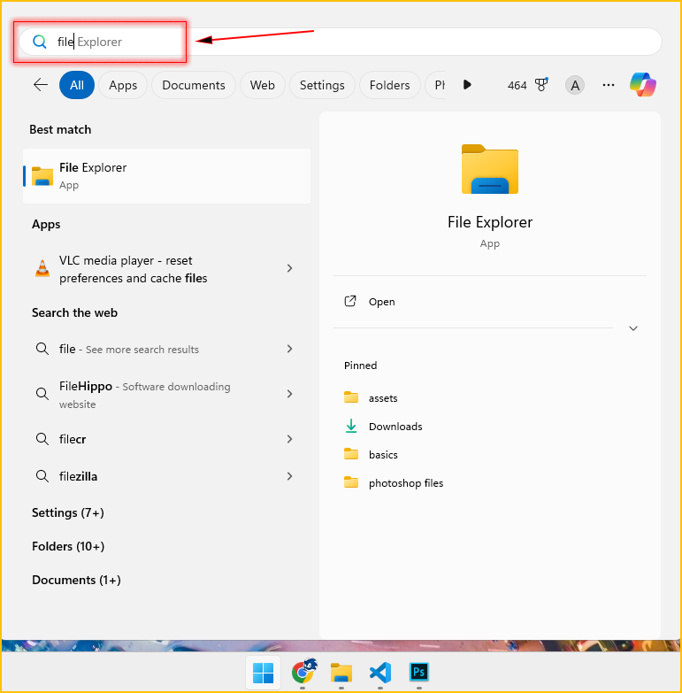
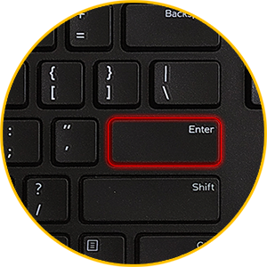
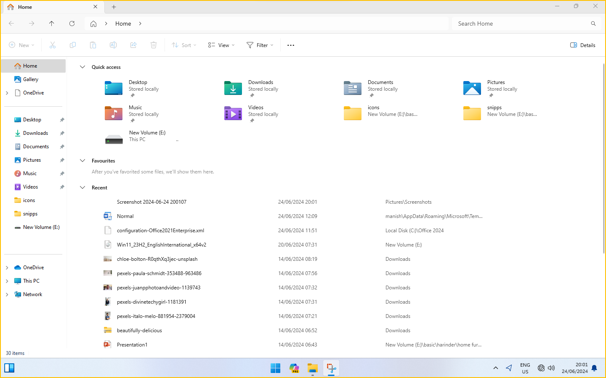
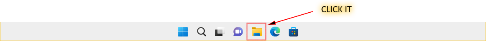
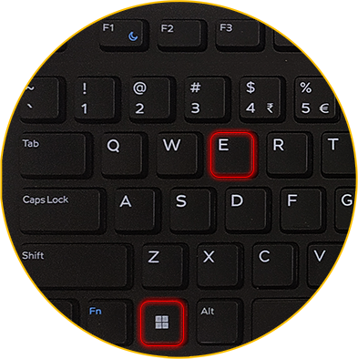

How to open File Explorer
File Explorer is a file management application in Windows operating systems. It provides a graphical user interface (GUI) for users to navigate and manage files and folders on their computer.
Method 1: Using the Start Menu
1. Click on the Start menu (Windows icon) at the bottom left corner of your screen.
2. Search for File Explorer.

Note: you don't need to type File Explorer fully in the search bar, just type first few initials like file and hit enter.
3. Hit Enter.

4. Your File Explorer window is opened successfully.

Method 2: Using the Taskbar
The most common way to open File Explorer is by clicking on its icon on the taskbar. By default, File Explorer is usually pinned to the taskbar for quick access.
1. Look for an icon that looks like a folder in the taskbar.
2. Clicking on it will open File Explorer.

3. This action will open File Explorer, giving you access to your files and folders.
Note: This method won't work if your file explorer is not pinned to the taskbar. First pin it and then open it from there.
Method 3: Using the Shortcut
1. Press the  + E keys simultaneously on your keyboard.
+ E keys simultaneously on your keyboard.

2. This key combination will immediately open File Explorer.
Practice Question:
Pin the file explorer to the taskbar.